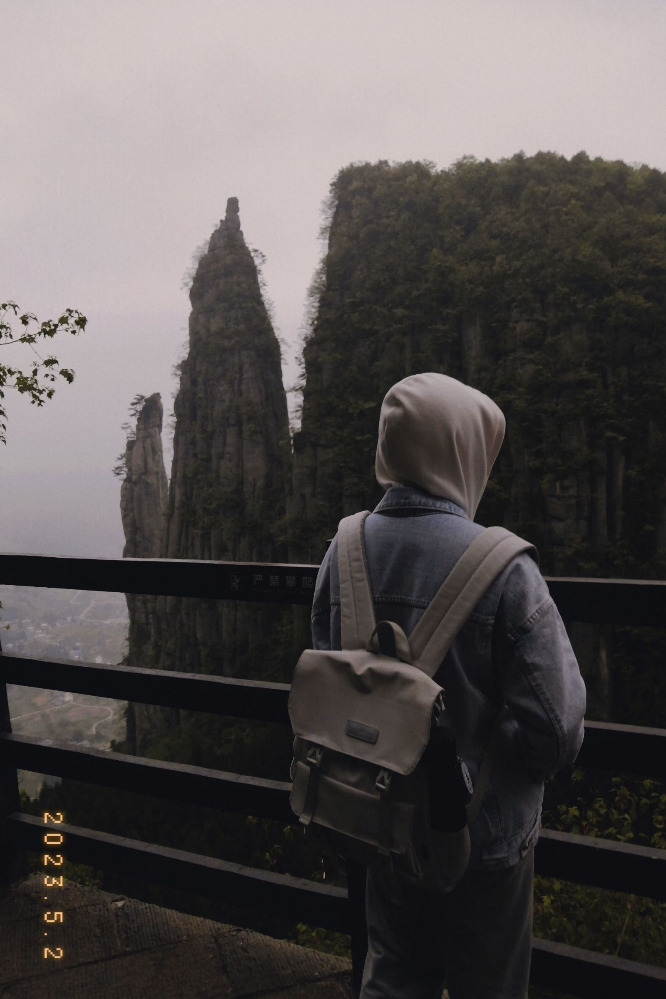

恩施真是个人杰地灵的好地方，来这里的第一眼我就喜欢上了这里，火车离恩施越近， 景色便越发优美，一路上隐隐有些期待。下了高铁，一路平矮的房屋给我朴实的感觉， 这让我不由得想起家乡，一个同样朴实的城市。我喜欢安静的气氛，宁静是这座城市的代名词。
晚餐，恩施豆皮很好吃。
第一天，我和朋友去了恩施土司城，这是土家族和苗族的建筑，蜿蜒斗拱，与中原大不相同。土司， 类似过去土家族的县官，那么在这座县衙里，门前不供神佛，明晃晃地雕刻了四座青面獠牙罗刹， 城内有博物馆，其中有一座七头佛像，人情风物，别有趣味。
我们租了当地传统民族服饰，拍了许多照片。

第二天，我们去了恩施大峡谷，可能是我们心诚则灵，去爬山那天刚好多云，让原本艰苦的爬山路变 得没那么辛苦，我们一路嬉戏打闹，虽然劳累，却毫无怨言，与好友出行真是令人愉悦啊，好的旅行 需要好的旅伴。
风光正好，下山路上突然下起小雨，雨雾将群山环绕，朦朦胧胧，影影绰绰，仿佛置身仙境。我们来了 一趟，却能看到两种景色，幸甚至哉！
在群山中留下我的足迹。——旅行者刘
| 4月30日 | 5月1日 | 5月2日 | |
|---|---|---|---|
| 大事记 | 30日晚到达恩施 | 游恩施土司城 | 游恩施大峡谷 |
| 小事记 | 与朋友一起吃恩施豆皮，晚上逛小吃街，收获一件牛仔上衣 | 包丢了，没想到是被保安拿走了，保安大爷人真的很好 | 走了一整天，走的腿肚子痛，成功收获一根拐杖 |